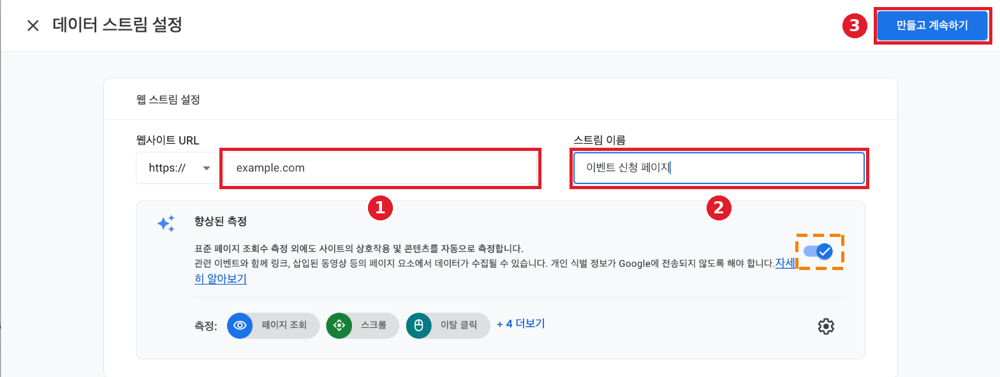
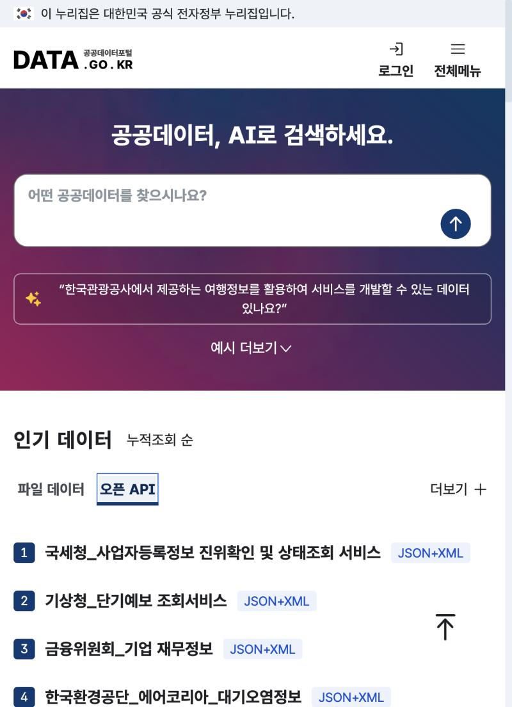
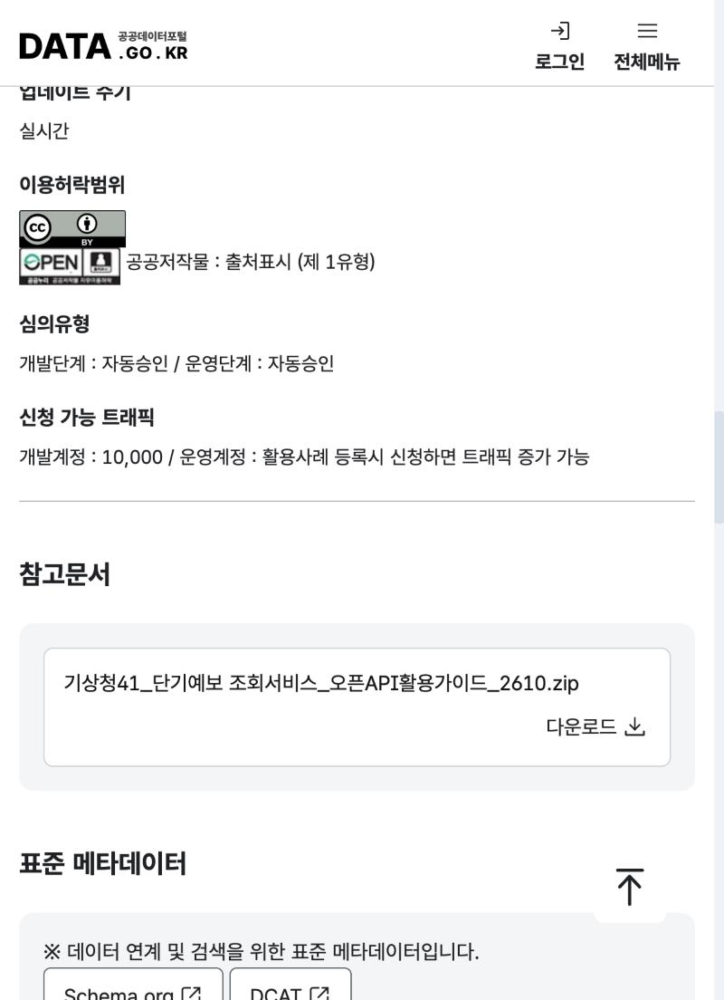

내 블로그를 출시하고, 이벤트를 심고, 바깥 API를 붙여요
어제는 클로드에 내장된 AI로 챗봇을 만들었어요. 오늘은 먼저 내 블로그를 직접 만들어 배포하고, 방문자가 어떤 글을 읽는지 GA로 셀 수 있게 이벤트를 심고, GA에서 그 숫자를 읽어 지표로 바꿔요. 그다음 바깥 회사와 기관이 열어 둔 API를 붙이며 요청·응답·키를 익히고, 공공데이터가 무엇인지 살펴봐요.
교육 개요
| 시간 | 09:00–18:00 (점심 12:00–13:00, 수업 8시간) |
|---|---|
| 교과 | [기본] AI 서비스 개발 · 13일차 (총 18일) |
| 교육 목표 | 내 블로그를 목표 단계별로 만들어 배포하고, 방문자 행동을 이벤트 표로 설계해 GA로 확인한다. 이어서 무료 키 API를 붙여 보며 요청·응답·주소·키의 뜻과 키를 다루는 규칙, 공공데이터를 찾고 쓰는 방법을 설명한다. |
| 수업이 끝나면 | ① 블로그 기능을 CRUD로 나누고, 1차 목표(배포 주소로 첫 화면 열기)까지 출시하기 ② 블로그에서 셀 행동을 이벤트 표로 정하고, DebugView에서 들어오는지 확인하기 ③ GA에서 활성 사용자와 이벤트를 확인하고, "어떤 글이 인기 있나"를 지표·계산식·필요한 이벤트로 바꿔 2차 개선 PRD 쓰기 ④ API·호출·응답이 무엇인지 내 말로 설명하고, 키를 코드 밖에 두는 이유 말하기 ⑤ 무료 키를 받아 날씨 배너에 붙이고, 네트워크 탭에서 요청·응답 보기 |
수업 전 준비
- 깃헙·파이어베이스: 1세션에서 블로그를 올릴 깃헙과 파이어베이스 콘솔에 로그인해 둬요.
- 구글 애널리틱스: 2세션에서 쓸 GA에 들어가지는지 확인해요. 3주차 월요일에 만든 계정을 그대로 써요.
- 이메일: 5세션에서 OpenWeather 무료 키를 받을 때 이메일로 가입해요. 개인 메일이면 돼요.
- 공공데이터포털 회원가입: data.go.kr에 가입하고 로그인해 둬요. 7세션(선택)에서 API를 신청해요.
- 어제 만든 채팅: 링크를 열어 둬요. 오늘 만든 날씨를 붙여 볼 수 있어요.
타임테이블
| 시간 | 구분 | 내용 |
|---|---|---|
| 09:00–09:20 | 오늘의 단어 | 오늘의 단어 |
| 09:20–12:00 | SESSION 1 | 내 손으로 만드는 자체 개발 블로그 |
| 12:00–13:00 | 점심 | |
| 13:00–14:20 | SESSION 2 | 내 블로그에 이벤트 트래킹 심기 |
| 14:30–15:50 | SESSION 3 | GA 활용과 지표 측정 |
| 16:00–16:40 | SESSION 4 | API란? 요청·응답과 키 |
| 16:40–17:30 | SESSION 5 | 무료 키 받아 날씨 배너 붙이기 |
| 17:30–18:00 | 정리 | 오늘 정리와 과제 |
| 수업 뒤 | SESSION 6 · 선택 | 공공데이터 알아보기 |
| 수업 뒤 | SESSION 7 · 선택 | 공공데이터포털 API 시험하기 |
| 수업 뒤 | SESSION 8 · 선택 | API 용어표로 정리하기 |
오늘의 단어
오늘 처음 나오는 말을 먼저 짧게 짚고 시작해요.
| 단어 | 뜻 |
|---|---|
| API | 프로그램끼리 정보를 주고받도록 정해 둔 약속. 정해진 모양으로 부탁하면 정해진 모양으로 답을 줘요. |
| 엔드포인트(주소) | API에 호출을 보내는 주소. 일마다 주소가 달라요. |
| 호출 · 응답 | 내 프로그램이 API에 부탁을 보내는 것 · API가 돌려주는 답 |
| JSON | 응답을 담는 글 모양. {"이름": 값} 형태예요. |
| 요청 · 파라미터 | 호출할 때 보내는 부탁의 내용 · 요청에 붙이는 조건. 주소 뒤 ? 다음에 이름=값으로 붙여요. |
| API 키 · 인증키 | 누가 요청했는지 알려 주는 비밀 열쇠. 사용량과 비용이 이 키에 쌓여요. |
| 트래픽(호출 한도) | 하루 또는 1분에 보낼 수 있는 요청 수 |
| 공공데이터 | 정부와 공공기관이 누구나 쓰도록 열어 둔 데이터. 파일(CSV·엑셀)이나 API로 받아요. |
내 손으로 만드는 자체 개발 블로그
내 블로그를 직접 만들어 출시해 봐요. 목표만 주어지고, 그 안에서 필수·선택·주의사항을 지키며 스스로 만들어요.
기획자1-1. 전체 공통 지침
| 구분 | 내용 |
|---|---|
| 필수 요구사항 | ① 로그인한 관리자만 글을 쓸 수 있어요 ② 글은 공개글과 나만 보기 글로 나뉘어요 |
| 주의사항 | API 키나 중요한 비밀 값은 .env 파일에 넣어요. 대화창이나 깃헙에 올리지 않아요. 나만 보기 글은 화면에서만 숨기지 말고 데이터베이스에서 막아요(1-4 트러블슈팅 ①). |
| 추천 도구 | 코드는 깃헙, 배포·로그인·데이터베이스는 파이어베이스(호스팅, Authentication, Firestore). 다른 도구를 골랐다면 의사결정 문서에 이유를 적어요. |
| 데이터베이스 관점 | 블로그 기능을 CRUD(만들기·읽기·고치기·지우기)로 나눠서 봐요(1-3) |
셋이 무엇이 다른가요? 깃헙에 코드를 올릴 때 비슷한 이름이 세 가지 나와요.
| 도구 | 한 줄 설명 | 하는 일 |
|---|---|---|
깃 CLI (git) | 코드 기록을 다루는 도구 | 커밋, 가지 만들기, 푸시 |
깃헙 CLI (gh) | 깃헙 웹사이트 기능을 터미널에서 쓰는 도구 | PR 만들기, PR 상태 보기, 이슈 쓰기 |
| 깃헙 커넥터 (claude.ai의 깃헙 연동) | 클로드에게 내 저장소를 읽을거리로 보여 주는 기능 | 채팅이나 프로젝트에 저장소 파일을 붙여서 클로드가 코드를 이해하게 함 |
출처: Claude 도움말 Use the GitHub integration(채팅·프로젝트에 깃헙 저장소를 붙여 코드 맥락을 주는 기능), 깃헙 블로그 GitHub CLI 1.0(깃헙 CLI는 깃헙을 터미널로 가져와 이슈부터 PR까지 터미널에서 처리) (2026-11-17 확인)
에이전틱 코딩 문서 3종 AI와 함께 만들 때는 아래 문서를 만들고 계속 고쳐 가요. 다음에 이어서 작업할 때 AI도, 나도 이 문서를 보고 다시 시작해요.
- 코드 개발 지침 (
CLAUDE.md): 내 프로젝트에서 클로드 코드가 지킬 규칙이에요. 어제 챗봇에 넣었던 시스템 프롬프트를 내 프로젝트에 두는 것과 같아요. - 의사결정 문서 (
docs/decisions.md): 내 프로젝트에서 정한 것을 날짜와 함께 모두 적어요. 예: "배포는 파이어베이스 호스팅으로 정함" - 실패 로그 (
docs/failures/주제.md): 막혔던 일과 푼 방법을 주제마다 따로 적어요. 예:docs/failures/로그인.md
실습1-2. 단계별 목표
| 목표 | 할 일 (필수) | 선택 | 다 됐다는 기준 |
|---|---|---|---|
| 1차 첫 화면 출시 | 블로그 첫 화면 디자인 초안 잡기 → 깃헙에 코드 올리기 → 사이트 배포 | 문서 3종 처음 만들기 | 배포 주소로 첫 화면이 열린다 |
| 2차 전체 화면 시안 | 클로드 아티팩트로 5개 화면 만들기: 첫 화면, 글 목록, 글 상세, 글쓰기, 관리자 로그인 → 전체 시안을 시안 공유 링크로 열기 | • 공통 디자인 요소를 아티팩트 '디자인 시스템'으로 저장 • 문서 3종 업데이트 + 디자인 시스템 문서( docs/design-system.md) | 5개 화면 시안 링크가 있다 |
| 3차 첫 기능 | 사용자 스토리 "관리자는 로그인 후에, 글쓰기 기능으로 글을 직접 쓸 수 있다" 만들기. 모르는 것과 해결 과정은 문서에 남기며 진행 | • 문서 4종 업데이트 • 기능 배포 후 테스트 보고서(PDF) | 로그인 → 글쓰기 → 목록에 내 글이 보인다 |
| 4차 글 관리 | 글 수정, 글 삭제, 글 옵션(공개글·비공개글) | • 글 썸네일 이미지 • 리치 텍스트 에디터(RTE): 본문에 이미지·링크 넣기 | 비공개 글이 로그아웃 상태에서 안 보인다 |
1차의 사이트 배포는 실제로 저장되는 블로그를 올리는 것이고, 2차의 시안 공유는 생김새만 보여 주는 링크예요. 둘은 달라요.
개념1-3. CRUD로 본 블로그 기능
| CRUD | 뜻 | 블로그 기능 | 목표 |
|---|---|---|---|
| C Create | 만들기 | 글쓰기 | 3차 |
| R Read | 읽기 | 글 목록, 글 상세(로그아웃이면 공개글만, 관리자는 모두) | 2차 화면, 3차 데이터 |
| U Update | 고치기 | 글 수정, 공개·비공개 바꾸기 | 4차 |
| D Delete | 지우기 | 글 삭제 | 4차 |
어제 챗봇 관리자 페이지에서 상품과 주문을 추가하고 고쳤던 것 기억하시나요? 그것도 CRUD였어요.
기획자·확인1-4. 자주 나올 만한 트러블슈팅
"이런 문제가 있었어요! 안 돼요!"에 대한 강사 답변이에요. 질문을 누르면 답이 열려요.
① "나만 보기로 쓴 글이 로그아웃해도 보여요!"
강사 코멘트 화면에서만 숨겼기 때문이에요. 숨기는 일은 데이터베이스가 해야 해요. 클로드 코드에게 "비공개 글은 쓴 사람만 읽을 수 있게 데이터베이스 보안 규칙을 만들어 줘"라고 하세요. 다 되면 시크릿 창에서 비공개 글 주소를 열어 보고, 안 열리면 성공이에요.
출처: 파이어베이스 Cloud Firestore 보안 규칙 시작하기(데이터를 읽고 쓸 때마다 보안 규칙을 먼저 검사하고, 막히면 요청 전체가 실패), 보안 규칙과 Firebase 인증(로그인하지 않으면 auth가 비어 있음), 보안 규칙 조건 작성(visibility가 public일 때만 읽기 예시) (2026-11-17 확인)
② "개발자 도구에 파이어베이스 apiKey가 보여요! 키가 샌 건가요?"
강사 코멘트 괜찮아요. 파이어베이스 키는 클로드 API 키나 오픈AI 키와 달리 밖에 보여도 되는 키예요. 내 데이터는 키가 아니라 ①의 보안 규칙이 지켜 줘요. 대신 클로드 API 키나 오픈AI 키는 절대 화면 코드에 넣지 말고 .env에 둬요.
출처: 파이어베이스 파이어베이스 API 키 사용과 관리(파이어베이스 키는 코드에 넣어도 되며, 보안 규칙과 App Check를 쓰라고 권함) (2026-11-17 확인)
③ "내 컴퓨터에선 되는데, 배포하니까 파이어베이스가 연결이 안 돼요!"
강사 코멘트 .env 파일은 깃헙에 안 올라가서 그래요. 정상이에요. 클로드 코드에게 "배포한 사이트에서는 이 설정값을 어디에 넣어야 해?"라고 물어보고, 어떻게 했는지 의사결정 문서에 한 줄 적어요. 어제 6-2에서 .env를 .gitignore에 넣었던 것 기억하시나요? 같은 이유예요.
출처: 깃헙 Docs 파일 무시하기(.gitignore에 적은 파일과 폴더는 커밋할 때 빠짐) (2026-11-17 확인)
④ "아티팩트로 배포했는데 글쓰기를 눌러도 저장이 안 돼요!"
강사 코멘트 고장이 아니에요. 아티팩트는 생김새를 보여 주는 시안이고, 실제로 저장되는 건 깃헙과 파이어베이스로 배포한 진짜 사이트예요. 저장 기능은 3차에서 진짜 사이트에 만들어요.
근거: 공식 문서가 아니라 이 과제의 목표 설계예요. 2차는 시안 공유, 3차는 글쓰기 기능 구현으로 나눠 두었어요.
⑤ "썸네일을 올리려니까 요금제를 바꾸래요! / 402·403 오류가 나요!"
강사 코멘트 정상이에요. 이미지를 저장하는 Storage는 무료 요금제(Spark)로는 못 쓰고 Blaze 요금제로 바꿔야 해요. Blaze에서도 일정량까지는 무료예요. 썸네일은 선택이라서 건너뛰어도 돼요. 하고 싶다면 어제처럼 Blaze로 바꾸고 사용량 메뉴부터 확인해요.
출처: 파이어베이스 Cloud Storage 요금제·기본 버킷 변경 FAQ(Storage는 Blaze 요금제 필요, Blaze에서도 무료 사용량 있음, Spark에서 호출하면 402·403 오류) (2026-11-17 확인)
결과1-5. 결과
이렇게 보이면 성공배포 주소에서 관리자로 로그인해 글을 쓰고, 나만 보기 글은 로그아웃 상태에서 보이지 않는다
수업 시간에는 1차 목표(배포 주소로 첫 화면이 열린다)까지 마쳐요. 2세션에서 이 배포 주소에 이벤트 트래킹을 심어요. 2차~4차 목표는 수업 뒤에 이어서 해요.
- CRUD
- 데이터로 하는 네 가지 일. 만들기(Create)·읽기(Read)·고치기(Update)·지우기(Delete)
- 보안 규칙
- 데이터베이스가 "누가 무엇을 읽고 쓸 수 있는지" 검사하는 규칙
- 의사결정 문서
- 프로젝트에서 정한 것을 날짜와 함께 모아 두는 문서
- 실패 로그
- 막혔던 일과 해결 방법을 주제별로 적는 문서
- 리치 텍스트 에디터(RTE)
- 글자 꾸미기, 이미지·링크 넣기를 버튼으로 할 수 있는 글쓰기 칸
내 블로그에 이벤트 트래킹 심기
1세션에서 블로그를 배포했어요. 이번에는 방문자가 어떤 글을 열고 끝까지 읽는지 GA로 셀 수 있게 이벤트를 심어요. 3주차 월요일에 이벤트 신청 페이지에 GA를 붙이고 이벤트 이름을 정해 봤던 것 기억하시나요? 그때 배운 방법을 내 블로그에 그대로 써요.
기획자2-1. 블로그에서 무엇을 셀지 표로 정하기
이벤트 트래킹이란?
이벤트 트래킹은 사용자의 행동 하나(글 열기, 공유 단추 누르기)에 이름을 붙여 GA로 보내는 일이에요. 어떤 행동을, 언제, 어떤 이름으로 보낼지 적은 표를 이벤트 표(이벤트 텍소노미)라고 불러요. 개발자는 이 표를 보고 이벤트를 심고, 기획자는 이 표를 보고 보고서를 읽어요.
CRUD로 나눠 보면 셀 것이 보여요
1세션 1-3에서 블로그 기능을 CRUD로 나눴어요. 같은 표에 '누가 하나'와 '어디에 남나'를 붙여 봐요.
| CRUD | 블로그 기능 | 누가 하나 | 어디에 남나 | GA로 셀까 |
|---|---|---|---|---|
| C | 글쓰기 | 관리자(나) | 파이어베이스 데이터베이스에 이미 남아요 | 세지 않아요 |
| R | 글 목록, 글 상세 | 방문자 | 어디에도 남지 않아요 | 세요 |
| U | 글 수정, 공개·비공개 바꾸기 | 관리자(나) | 데이터베이스에 남아요 | 세지 않아요 |
| D | 글 삭제 | 관리자(나) | 데이터베이스에 남아요 | 세지 않아요 |
기획자가 알고 싶은 것은 "방문자가 무엇을 읽나"예요. 글쓰기·수정·삭제는 나 혼자 하는 일이라서, GA에 섞이면 방문자 숫자만 흐려져요. 그래서 관리자로 로그인한 상태에서는 이벤트를 보내지 않아요. 3주차 월요일에 신청 수는 시트로, 방문 수는 GA로 따로 모았던 것과 같은 생각이에요.
예시
| 이벤트 이름 | 언제 보내나 | 파라미터 | 답하려는 질문 |
|---|---|---|---|
| page_view (자동) | 페이지가 열릴 때 | page_location (자동) | 몇 명이 왔나 |
| post_list_click | 글 목록에서 글 제목을 누를 때 | post_id, list_position | 목록 몇 번째 글이 많이 눌리나 |
| post_view | 글 상세 화면에 본문이 다 불러와진 뒤 한 번 | post_id | 어떤 글이 많이 읽히나 |
| scroll (향상된 측정, 자동) | 페이지를 90%까지 처음 내렸을 때 | (자동) | 글을 끝까지 읽었나 |
| share (추천 이벤트) | 공유 단추를 누를 때 | content_type=post, item_id | 어떤 글이 공유되나 |
- 이름은 3주차 월요일 5세션처럼 소문자와 밑줄로, '대상_행동' 순서로 지어요. share처럼 GA4가 이름을 미리 정해 둔 추천 이벤트는 그 이름을 그대로 써요.
- 바뀌는 값(어떤 글인지)은 이벤트 이름이 아니라 파라미터로 보내요. post_view_첫글이 아니라 post_view + post_id예요.
- 글 제목은 고치면 바뀌어서 글 ID로 보내요. 이름·이메일 같은 개인정보는 어떤 파라미터에도 넣지 않아요.
- scroll과 page_view는 GA가 알아서 세요. 2-2에서 웹 스트림을 만들 때 향상된 측정을 켜 두면 돼요.
STEP 1. 내 블로그에 맞게 고치기
내 블로그 배포 주소를 열고, 방문자가 하는 행동을 순서대로 적어요. 첫 화면 → 글 목록 → 글 제목 누르기 → 글 읽기 → (공유하기). 예시 표에서 내 블로그에 없는 기능의 줄은 지워요. 공유 단추가 없으면 share 줄을 지워요.
STEP 2. 클로드에게 검토받기
프롬프트
요청: 내 블로그의 GA4 이벤트 표를 검토하고 고친 표를 줘. 내용: 내 블로그 화면은 [첫 화면, 글 목록, 글 상세 등 내 블로그 화면 이름]이야. 내 표는 [STEP 1에서 고친 이벤트 표 붙여 넣기]야. 이름은 소문자와 밑줄로 '대상_행동' 순서로 짓고, GA4 추천 이벤트로 바꿀 수 있는 것은 알려 줘. 관리자 행동(글쓰기·수정·삭제)과 개인정보는 넣지 마. 내 블로그에 없는 기능의 이벤트는 추가하지 마. 형식: 고친 표(이벤트 이름 / 언제 보내나 / 파라미터 / 답하려는 질문) + 바뀐 곳과 이유 목록.
확인할 점
- 모든 이벤트에 '언제 보내나'가 한 문장으로 적혀 있다
- 관리자 행동(글쓰기·수정·삭제)이 표에 없다
- 파라미터에 글 제목·이름·이메일이 없고, 글 ID만 있다
- 내 블로그에 없는 기능의 이벤트가 없다
출처: Google 애널리틱스 고객센터 추천 이벤트 · Google 애널리틱스 개발자 문서 추천 이벤트 목록(share의 파라미터 content_type·item_id) · 향상된 측정 이벤트(스크롤은 페이지 90% 지점) · 개인 식별 정보(PII) 전송을 피하는 방법 (2026-11-18 확인)
- 이벤트 트래킹
- 사용자의 행동 하나에 이름을 붙여 분석 도구로 보내는 일
- 이벤트 표(이벤트 텍소노미)
- 어떤 행동을, 언제, 어떤 이름과 파라미터로 셀지 정한 약속 표
- 추천 이벤트
- GA4가 이름과 파라미터를 미리 정해 둔 이벤트. 예: share, sign_up
- 향상된 측정
- 코드를 고치지 않아도 GA4가 스스로 세는 이벤트 묶음. 스크롤, 바깥 링크 클릭 등
실습2-2. GA 속성 만들고 측정 ID 복사하기
3주차 월요일 4세션에서 이벤트 신청 페이지에 GA를 붙였던 것 기억하시나요? 같은 순서로 블로그용 속성을 하나 더 만들어요. 화면이 기억나지 않으면 3주차 월요일 4-2의 캡처를 함께 열어 봐요.
analytics.google.com에서 [관리] → [만들기] → [속성]을 눌러요. 속성 이름에 [내 블로그]를 쓰고, 보고 시간대는 [대한민국], 통화는 [대한민국 원(₩)]으로 골라요.
데이터를 모을 곳은 [웹]을 골라요. 웹사이트 URL(①)에 1세션에서 배포한 블로그 주소를, 스트림 이름(②)에 [내 블로그]를 써요. 향상된 측정은 켠 채로 두고 [만들고 계속하기](③)를 눌러요.

웹 데이터 스트림 설정 화면(3주차 월요일 실습 화면). 웹사이트 URL에는 내 블로그 주소를 넣어요 빨간 번호 = 누를 곳(순서) 주황 점선 = 확인할 곳 [웹 스트림 세부정보]에서 G-로 시작하는 측정 ID를 복사해요.
측정 ID는 태그 코드에 그대로 들어가서, 배포한 페이지의 소스에서 누구나 볼 수 있어요. 3주차 월요일에 [페이지 소스 보기]로 내 측정 ID를 찾았던 것과 같아요. 그래서 1-4 트러블슈팅 ②의 파이어베이스 apiKey처럼 화면 코드에 넣어도 돼요. 클로드 API 키처럼 돈이 나가는 키는 계속 .env에 둬요.
개발자·구현2-3. 클로드 코드로 태그와 이벤트 심기
1세션에서 블로그를 만든 클로드 코드 대화를 열고 아래 프롬프트를 보내요. [ ] 칸에는 2-2의 측정 ID와 2-1에서 고친 이벤트 표를 넣어요.
프롬프트
요청: 내 블로그에 GA4 태그를 넣고, 아래 이벤트 표대로 이벤트를 보내게 해 줘. 내용: 측정 ID는 [2-2에서 복사한 G-로 시작하는 측정 ID]야. 이벤트 표는 [2-1에서 고친 이벤트 표 붙여 넣기]야. 표의 '언제 보내나'에 적힌 때에만 한 번씩 보내 줘. 관리자로 로그인한 상태에서는 이벤트를 보내지 마. 파라미터에는 글 제목·본문·이메일을 넣지 말고 글 ID만 넣어 줘. 주소에 ?debug=1이 있을 때만 debug_mode를 켜 줘. 이벤트를 보내는 코드에는 주석을 달아 줘. 표에 없는 이벤트는 추가하지 마. 형식: ① 바꾼 파일 목록 ② 이벤트마다 보내는 곳(파일 이름과 화면 이름) 한 줄씩 ③ 다시 배포하는 방법.
클로드 코드가 고친 내용을 보여 주면, ②의 목록을 2-1 표와 견줘요. 표에 없는 이벤트가 생겼거나, 표의 이벤트가 빠졌으면 다시 고쳐 달라고 해요.
클로드 코드에게 "1세션에서 배포한 방법으로 깃헙에 올리고 다시 배포해 줘"라고 해요.
배포 주소를 열고 마우스 오른쪽 단추 → [페이지 소스 보기]를 눌러요. Ctrl+F(맥은 Cmd+F)로 내 측정 ID(G-…)가 찾아지면 태그가 들어간 거예요.
막히면
| 이렇게 보이면 | 이렇게 해요 |
|---|---|
| 페이지 소스에서 측정 ID가 안 찾아져요 | 다시 배포가 끝났는지 봐요. 브라우저가 예전 화면을 보여 줄 수 있으니 새로고침해요. 블로그가 화면을 스크립트로 그리는 방식이면 태그가 다른 파일에 있을 수 있어요. 클로드 코드에게 "GA 태그를 넣은 파일과 줄을 알려 줘"라고 물어봐요. |
| 글을 한 번 열었는데 post_view가 두 번 들어와요 | 보내는 곳이 두 군데 생긴 경우가 많아요. 클로드 코드에게 "post_view를 보내는 곳을 모두 찾아서, 본문을 다 불러온 뒤 한 번만 보내게 고쳐 줘"라고 해요. |
| 관리자로 글을 써도 이벤트가 들어와요 | 로그인 상태를 확인하는 조건이 빠졌어요. 클로드 코드에게 "관리자로 로그인했으면 이벤트를 보내지 않는 조건이 어디에 있는지 보여 줘"라고 해요. |
기획자·확인2-4. DebugView로 이벤트가 들어오는지 보기
실시간 보고서는 사람 수를 보여 주고, DebugView는 내 기기에서 보낸 이벤트를 하나씩 시간 순서대로 보여 줘요. 이벤트를 심은 뒤 확인할 때는 DebugView를 써요.
시크릿 창(로그인하지 않은 상태)에서 블로그 배포 주소 뒤에
?debug=1을 붙여 열어요. 예: [내 블로그 주소]/?debug=1글 목록에서 글 하나를 누르고, 글을 끝까지 내려요.
GA에서 [관리] → [데이터 표시] → [DebugView]를 눌러요. 가운데 시간 줄에 page_view, post_list_click, post_view, scroll이 차례로 들어오는지 봐요.
post_view를 누르면 오른쪽에 파라미터가 보여요. post_id가 방금 연 글의 ID인지, 제목이나 이메일이 들어 있지 않은지 확인해요.
이번에는 관리자로 로그인한 창에서 같은 주소를 열고 글을 열어요. DebugView에 새 이벤트가 들어오지 않으면 성공이에요.
debug_mode는 값을 false로 바꿔도 꺼지지 않아요. 그래서 주소에 ?debug=1이 있을 때만 켜지게 만들었어요. post_id 같은 파라미터를 일반 보고서와 탐색 보고서에서 보려면 [관리] → [데이터 표시] → [맞춤 정의]에서 맞춤 측정기준으로 등록해야 해요. 등록한 뒤 보고서에 보이기까지 24~48시간이 걸려요.
막히면
| 이렇게 보이면 | 이렇게 해요 |
|---|---|
| DebugView가 비어 있어요 | 주소에 ?debug=1을 붙였는지 봐요. 광고 차단 확장 프로그램을 켜 두었다면 끄거나 휴대폰으로 열어 봐요. 여러 사람이 같은 속성을 쓰면 화면 위쪽 기기 목록에서 내 기기를 골라요. |
| page_view만 있고 post_view가 없어요 | 글 상세 화면에서 보내는 코드가 빠졌거나, 본문을 불러오기 전에 멈췄어요. 2-3의 ② 목록에서 post_view를 보내는 곳을 다시 봐요. |
출처: Google 애널리틱스 고객센터 DebugView에서 이벤트 모니터링(디버그 모드를 켜야 DebugView에 보이며, debug_mode를 false로 바꿔도 꺼지지 않음) · 맞춤 측정기준과 측정항목 (2026-11-18 확인)
- DebugView
- 디버그 모드를 켠 기기에서 보낸 이벤트를 시간 순서대로 보여 주는 GA4 화면
- 맞춤 측정기준
- 내가 보낸 파라미터(예: post_id)를 보고서에서 쓸 수 있게 GA4에 등록한 항목
결과2-5. 결과
이렇게 보이면 성공로그아웃 상태로 글을 열면 DebugView에 post_view와 글 ID가 들어오고, 관리자로 로그인하면 들어오지 않는다
블로그를 3차·4차 목표까지 키우면 기능이 늘어나요. 기능을 하나 더할 때마다 2-1 표에 줄을 먼저 더하고, 그다음 클로드 코드에게 심어 달라고 해요.
GA 활용과 지표 측정
2세션에서 내 블로그에 GA 태그와 이벤트를 심었어요. 이번에는 쌓인 데이터를 GA에서 직접 열어 보고, "어떤 글이 가장 인기 있나?"라는 질문을 지표와 이벤트로 바꿔요. 마지막으로, GA로 확인할 수 없었던 것을 모아 2차 블로그 개선 PRD를 써요.
실습3-1. 서로의 블로그에 방문해 데이터 쌓고 실시간 보고서 보기
GA에 데이터가 있어야 볼 것이 생겨요. 수업에서는 서로가 손님이 되어 데이터를 쌓아요.
1세션에서 배포한 내 블로그 주소를 함께 수업 듣는 사람들과 나눠요.
5분 동안 다른 사람의 블로그에 들어가서 글 목록을 보고, 글을 열고, 끝까지 내려 보며 이것저것 눌러요.
내 GA에서 [보고서] → [실시간 개요]를 눌러요. 지난 30분 동안 들어온 사용자 수와, 2세션에서 심은 이벤트 이름이 보이는지 확인해요.
확인할 점
- 실시간 개요의 사용자 수가 1 이상이다
- [이벤트 이름별 이벤트 수]에 page_view와 2세션에서 심은 이벤트(예: post_view)가 보인다
개념3-2. 활성 사용자는 누구를 세는가, 그리고 GA에서 빠지는 사용자
GA 보고서 첫 화면에는 '활성 사용자'라는 숫자가 크게 보여요. 이 숫자가 정확히 누구를 세는지는 GA 공식 가이드에 정해져 있어요.
| 항목 | GA 공식 가이드의 설명 |
|---|---|
| 활성 사용자 | 지정된 기간 동안 내 사이트 또는 앱에 참여한 순 사용자 수예요. 참여 세션이 있는 사용자, 또는 웹사이트에서 first_visit 이벤트나 engagement_time_msec 매개변수가 수집된 사용자예요. |
출처: Google 애널리틱스 고객센터 [GA4] 사용자 측정항목
GA에서도 빠지는 사용자가 있어요
GA의 숫자는 사이트에 온 모든 사람의 숫자가 아니에요. 빠지는 경우는 크게 두 가지예요.
| 구분 | 예 | 기획자가 기억할 것 |
|---|---|---|
| 집계 기준에 따라 빠져요 | 알려진 봇·크롤러의 방문은 GA가 자동으로 빼요. 이 설정은 끌 수 없고, 얼마나 뺐는지도 보여 주지 않아요. 사용자 수가 적은 줄은 개인을 알아볼 수 없게 보고서에서 숨기기도 해요(데이터 임곗값). | 방문이 적은 블로그는 보고서의 일부 줄이 비어 보일 수 있어요 |
| 기술적으로 수집되지 않아요 | 광고 차단 확장 프로그램이 GA 태그를 막거나, 태그가 빠진 페이지에 들어온 경우예요. 태그를 넣기 전의 기록도 없어요. | GA 숫자는 데이터베이스(예: Firestore)의 숫자와 다를 수 있어요. 두 숫자를 대조해 봐요 |
출처: Google 애널리틱스 고객센터 알려진 봇 트래픽 제외(알려진 봇·스파이더 트래픽은 자동 제외, 끌 수 없고 제외량도 볼 수 없음) · [GA4] 데이터 임곗값(개인을 추론할 수 없도록 보고서·탐색 분석의 데이터를 숨길 수 있음) (2026-11-18 확인)
GA를 알면 이런 질문을 할 수 있어요
- 이 지표가 정말 정확할까?
- 가설을 검증하려면 지표를 어떻게 계산할까?
예를 들어 성공 지표를 "만족도가 올라간 사용자의 수"나 "예전보다 더 빨리 구매를 마친 사용자의 수"로 정했다고 해 봐요. 그러면 GA에 아래처럼 물어봐야 해요.
GA에서 [가설]을 측정하려면 어떻게 이벤트를 설정하거나 측정할 수 있을까요?
- 활성 사용자
- 정해진 기간 동안 사이트에 참여한 사람의 수. GA 보고서에서 '사용자'라고 하면 보통 이 숫자예요
- 데이터 임곗값
- 사용자 수가 너무 적은 줄을 개인 보호를 위해 보고서에서 숨기는 GA의 규칙
기획자3-3. "어떤 글이 가장 인기 있나?"를 지표와 이벤트로 바꾸기
내 블로그를 관리자 입장에서 분석한다고 생각해 봐요. "어떤 글이 가장 인기 있다"고 판단하려면 무엇을 봐야 할까요? 먼저 혼자 3분 동안 기준을 적어 봐요.
'인기'를 판단하는 기준은 사람마다 달라요. 많이 나오는 기준은 아래와 같아요.
- 많은 사람이 연 글(조회수, 유입)
- 오래 머문 글(체류 시간)
- 끝까지 읽힌 글(완독)
- 좋아요·댓글·스크랩·공유를 이끌어 낸 글(참여)
- 다시 찾아 읽은 글(재방문)
기준을 정했으면, 아래 순서로 지표 문서를 써요. 목적 → 측정할 지표 → 계산 방식과 필요한 이벤트 순서예요.
예시
| 측정할 지표 | 계산 방식 | 필요한 이벤트 | 정해야 할 기준 |
|---|---|---|---|
| 글별 평균 체류 시간(전체 게시글 기준) | 그 글에서 나간 시각 − 그 글을 연 시각 | 글 열기(post_view), 글에서 나가기 | 체류 시간이 길면 무조건 좋은 글일까요? 읽기 어려워서 오래 머문 것일 수도 있어요 |
| 완독률(글마다) | 끝까지 읽은 수 ÷ 글을 연 수 | post_view, 끝까지 읽음(예: 스크롤 100%) | '완독'의 기준을 내가 정해요. 짧은 글은 열자마자 끝까지 보여서 완독으로 세질 수 있어요 |
| 참여 수(글마다) | 좋아요·댓글·스크랩 수 | 좋아요·댓글·스크랩 이벤트 | 이 기능이 아직 블로그에 없다면, 이벤트가 아니라 새 기능부터 만들어야 해요(3-6) |
목적을 "무엇이 트렌디하고 인기가 많은지"처럼 넓게 쓰면, 무엇을 세야 할지 정할 수 없어요. 위 표처럼 지표마다 계산식과 기준이 나올 때까지 좁혀요.
실습3-4. GA에서 이벤트가 어떻게 모이는지 확인하기
[보고서] → [사용자 참여 발생 시간 및 유지율 보기] → [이벤트]를 눌러요. 이벤트 이름마다 이벤트 수와 총 사용자가 보여요.
[관리] → [데이터 표시] → [이벤트] → [최근 활동] 탭을 눌러요. 지난 28일 동안 들어온 이벤트 이름이 모두 보여요.
3-3에서 정한 '필요한 이벤트'가 목록에 있는지 하나씩 찾아요. 없는 이벤트는 3-6의 PRD에 '추가할 이벤트'로 적어요.
정상이에요. 실시간 개요와 DebugView에는 바로 보이지만, 일반 보고서는 GA가 데이터를 처리하는 데 24~48시간이 걸려요. 오늘 배포하고 이벤트를 발생시켰다면 다음 날 다시 확인해요.
출처: Google 애널리틱스 고객센터 [GA4] 데이터 최신성(데이터 처리에 24~48시간이 걸릴 수 있고, 그동안 보고서 데이터가 바뀔 수 있음) (2026-11-18 확인)
이벤트 이름을 정할 때의 규칙
- 이름만 읽어도 어떤 이벤트인지 알 수 있어야 해요.
- 내가 새로 추가한 이벤트는 앞에 공통 표시(접두어)를 붙이는 규칙도 좋아요. 그러면 GA가 자동으로 세는 이벤트와 한눈에 구분돼요.
예시
강사의 회사 홈페이지(셀렉트웨이)는 새로 만든 이벤트 이름 앞에 모두 swy_를 붙였어요. [최근 활동]의 검색 칸에 swy를 넣으면 직접 만든 이벤트만 모아 볼 수 있어요.
| 이벤트 이름 | 이름만 읽고 알 수 있는 행동 |
|---|---|
| swy_section_view | 페이지의 한 구역이 화면에 보였다 |
| swy_scroll_depth | 페이지를 일정 깊이까지 내렸다 |
| swy_page_load_complete | 페이지가 끝까지 불러와졌다 |
| swy_inquiry_form_open · swy_inquiry_form_submit | 문의 폼을 열었다 · 문의 폼을 보냈다 |
| swy_newsletter_subscribe | 뉴스레터를 구독했다 |
개발자와 이야기할 때
현장에서 개발자는 "GA 태그만 심어 주세요"라는 요청을 받는 경우가 많아요. 그래서 개발자도 GA의 세부 내용을 잘 모를 때가 많아요. "이 이벤트가 측정되고 있나요?"라고만 물으면 대화가 막혀요.
- 기획서를 들고 가요. 기획서에는 목표, 지표, 지표 계산 방식, 확인해야 할 이벤트, 추가해야 할 이벤트 요청 목록이 있어야 해요.
- 이번 프로젝트에서 측정이 가능한지 아닌지는 마케터와 기획자가 함께 먼저 찾아봐요.
- 이벤트 텍소노미 설계는 이벤트 이름을 나열하는 일이 아니에요. 3-3처럼 목적과 지표에서 출발해 필요한 이벤트를 고르는 일이에요.
실습3-5. page_view를 보며 내 사이트 구조의 문제 찾기
3-1에서 쌓은 page_view와 페이지별 체류 시간이 GA에서 제대로 구분되는지 봐요. [보고서]의 [페이지 및 화면]에서 페이지 제목과 경로를 확인해요.
이렇게 보이면 고쳐야 해요
| 보이는 것 | 왜 문제인가 | 고칠 방향 |
|---|---|---|
| 모든 페이지의 제목이 같아요(예: 사이트 이름 하나) | 어느 글을 봤는지 제목으로 구분할 수 없어요 | 페이지마다 제목을 따로 붙이게 개발해요. 제목 관리는 이벤트 텍소노미를 다시 짤 때 함께 정해요 |
| 글이 달라도 주소(URL)가 하나예요 | GA가 페이지를 주소로 나누기 때문에 글별 숫자가 합쳐져요 | 페이지마다 URL이 따로 나뉘게 개발해요 |
| 같은 글이 두 가지 주소로 열려요 | 한 글의 숫자가 두 줄로 나뉘어요 | 주소를 하나로 맞춰요 |
바이브코딩으로 만든 사이트에서 자주 생기는 일
바이브코딩으로 리액트(React) 같은 도구를 써서 만든 사이트는 대부분 주소가 바뀌지 않고 화면만 바뀌어요. 이런 사이트를 SPA(단일 페이지 애플리케이션)라고 불러요. 주소가 하나로 통일된 사이트(SPA, iframe으로 만든 사이트, 주소 변경 없이 화면만 바뀌는 사이트)에서 GA로 측정하려면, GA가 스스로 세는 기본 측정(향상된 측정)만으로는 부족해요. 화면이 바뀔 때마다 page_view 이벤트를 직접 보내는 '가상 페이지뷰'나, 화면 전환을 알아채는 설정을 따로 해야 해요.
반대로 화면마다 주소가 다른 사이트(MPA, 여러 페이지 사이트)는 기본 측정만으로도 페이지별 조회가 모여요. 다만 글 상세 주소가 post.html?id=글ID처럼 물음표(?) 뒤의 값으로만 나뉘면 조심해요. GA의 기본 보고서는 '페이지 경로'에서 물음표 뒤를 떼고 보여 줘서, 모든 글이 post.html 한 줄로 합쳐질 수 있어요.
프롬프트
요청: 내 사이트가 어떤 구조와 언어로 개발되어 있는지 설명하고, GA 사용에 이슈가 없을지 알려 줘. 내용: 참고로, URL이 모두 통일된 웹사이트(SPA, iframe 기반 사이트, URL 변경 없이 화면만 바뀌는 사이트)는 기본 자동 측정(향상된 측정) 대신 가상 페이지뷰(page_view 이벤트 수동 전송)나 화면 전환 트리거를 따로 설정해야 한다고 알고 있어. 내가 만든 커스텀 GA 이벤트를 측정하는 과정에서도 이슈가 없는지 함께 봐 줘. 형식: ① 내 사이트 구조 한 줄 ② GA 이슈 목록 ③ 고칠 것(우선순위 상·중·하).
출처: '페이지 경로'는 도메인 뒤부터 물음표 앞까지만 담고, 물음표 뒤 값까지 보려면 '페이지 경로 + 쿼리 문자열'이나 '페이지 위치' 측정기준을 써야 함 — GOV.UK GA4 데이터 안내 (2026-11-18 확인)
- SPA(단일 페이지 애플리케이션)
- 주소는 그대로 두고 화면만 바꿔 보여 주는 사이트
- MPA(여러 페이지 사이트)
- 화면을 바꿀 때마다 다른 주소의 페이지로 이동하는 사이트
- 가상 페이지뷰
- 주소가 바뀌지 않아도 화면이 바뀔 때 page_view 이벤트를 직접 보내는 방법
기획자3-6. 2차 블로그 개선 PRD 쓰기
3-3~3-5에서 찾은 것을 모아, 블로그가 데이터 분석을 충분히 할 수 있도록 개선하는 PRD를 써요. 특히 GA에서 빠지거나 확인할 수 없었던 것을 모두 담아요.
STEP 1. 클로드 코드에게 먼저 물어보기
요청: 현재 내 구조에서 내 블로그를 GA로 데이터 분석한다고 했을 때, 어떤 글이 가장 인기가 많은지 측정할 수 있을지 알려 줘. 내용: 내가 알고 싶은 지표는 [3-3에서 정한 지표 붙여 넣기]야. 예: 평균 체류 시간이 높은가, 완독했는가, 좋아요·댓글·스크랩을 이끌어 냈는가. 형식: 지표마다 '지금 측정 가능 / 이벤트 추가 필요 / 새 기능 필요' 중 하나와 이유.
답을 받으면, 클로드가 제안한 항목 중에서 내 기준을 직접 골라요. 예를 들어 '완독'이라면 "내가 생각한 완독의 기준은 스크롤 100%까지 내려간 상황이다"처럼 기준을 문장으로 정해요.
STEP 2. PRD 쓰기 (40분)
| 항목 | 내용 |
|---|---|
| 목적 | 블로그로서 데이터 분석이 충분하도록 개선하기. 특히 GA에서 빠지거나 확인할 수 없었던 사항을 포함하기 |
| 형식 | HTML 파일 하나. 텍스트와 표 중심으로 써요 |
| 문서 크기 | 나중에 출력하거나 공유하기 쉽게, 슬라이드 규격이나 A4 문서 중 하나로 정해요 |
확인할 점
- 문서 맨 위에 문제와 목표가 먼저 나와요. 제목 흐름은 '배경 → 문제와 해결 방안 → 목표 → 요구사항 상세'처럼 PRD 모양을 따라요
- 문제 정의 → 최종 문제 정의 → 최종 문제에 대한 가설과 지표 → 가설마다의 해결 방안 표가 이어져요. 해결 방안 표에는 ID를 붙여 "어느 가설에서 나온 해결 방안인지" 읽히게 해요
- 고칠 항목에 우선순위(상·중·하)가 있어요. 예: 모든 페이지 제목이 같다면 1순위로 고쳐요
- 좋아요·스크랩·댓글처럼 블로그에 아직 없는 기능은 이벤트 명세만 쓰지 않아요. 기능마다 사용자 스토리와 인수 조건을 함께 써요. 이벤트 명세만 있으면 PRD가 아니라 이벤트 명세서예요
- 목표 부분에 '하지 않을 것'도 적어요
- 블로그 개선 정도의 작은 범위에서는 시장·경쟁사 조사(데스크 리서치)를 건너뛰어도 돼요
결과3-7. 결과
이렇게 보이면 성공PRD의 해결 방안마다 출발한 가설의 ID가 붙어 있고, 새 기능에는 사용자 스토리와 인수 조건이 있다
API란? 요청·응답과 키
API와 호출·응답이 무엇인지 잡고, API 키를 어디에 두어야 하는지 먼저 정해요.
기획자4-1. "날씨 API 연동" 한 줄로는 왜 부족할까
기획서에 "날씨 API 연동"이라고만 쓰면, 개발자는 만들기 전에 아래 질문을 다시 해요. 가장 많이 묻는 것은 기능 정의예요. 어디에, 누구에게, 무엇을, 어떤 조건에서, 누르면 어떻게 되는지가 정해져야 만들 수 있어요. 답이 없으면 개발자가 짐작해서 만들거나, 일이 멈춰요. 기획자는 무엇을, 왜, 사용자가 어떤 경험을 하게 할지를 답해요. 몇 번 부를지, 키를 어디에 둘지 같은 구현 방법은 개발자가 정해요.
| 구분 | 개발자가 묻는 것 | 기획자의 답 (오늘 만들 날씨 배너 기준) | 오늘 배우는 곳 |
|---|---|---|---|
| 목적 | 이 배너는 왜 만드나요? | 그날 날씨에 맞는 연말 선물을 추천해서, 고객이 선물 상품을 더 많이 눌러 보게 하려고요. | 5-1 |
| 기능 정의 | 어느 화면, 어디에 나오나요? | 쇼핑몰 첫 화면 맨 위 이벤트 배너 자리예요. PC와 모바일 모두 나와요. | 5-1 |
| 누구에게, 언제까지 보이나요? | 로그인과 상관없이 모든 고객에게, 연말 선물 이벤트 기간 동안만 보여요. | 5-1 | |
| 어느 지역 날씨인가요? | 서울 한 곳이에요. 고객에게 위치 권한을 묻지 않고, 모두에게 같은 서울 날씨를 보여 줘요. | 5-1 | |
| 어떤 값을 화면에 보여 주나요? | 현재 기온, 날씨 상태(맑음·흐림 등), 기준 시각 세 가지예요. | 5-1 | |
| 날씨에 따라 무엇이 바뀌나요? | 문구가 네 가지로 바뀌어요. 눈이 오면 "포근한 니트 선물", 비가 오면 "우산·레인부츠 선물", 10°C 아래면 "따뜻한 겨울 선물 추천!", 그 밖에는 기본 선물 문구예요. 눈·비가 기온보다 먼저예요. | 5-1 | |
| 배너를 누르면 어디로 가나요? | 지금 보이는 문구에 맞는 선물 기획전 목록으로 가요. 예를 들어 비 문구일 때 누르면 우산·레인부츠 목록이 열려요. | 5-1 | |
| 문구는 누가 바꾸나요? | 이번 이벤트는 정해 둔 네 문구로 시작해요. 반응을 보고, 다음에는 이벤트 담당자가 관리자 화면에서 바꿀 수 있게 할지 정해요. | 5-1 | |
| 사용자 경험 | 날씨가 얼마나 최신이어야 하나요? | 고객이 배너를 볼 때 바깥 날씨와 어긋나 보이지 않으면 돼요. 분 단위로 정확할 필요는 없어요. 대신 기준 시각을 함께 보여 줘서 언제 날씨인지 알게 해요. | 5-1 |
| 못 불러오면 어떻게 보이나요? | "날씨를 불러오지 못했어요" 문구와 [다시 불러오기] 단추를 보여 줘요. 배너의 다른 내용과 기본 선물 문구는 그대로 보여요. | 5-1 | |
| 운영·비용 | 어느 API를 쓰나요? | OpenWeather 현재 날씨 API를 써요. 기상청 단기예보와 견줘 본 뒤 최종 기준을 정해요. | 5세션, 8-1 |
| 비용이 들어도 되나요? | 이번 이벤트는 무료 범위 안에서 시작해요. 무료 범위를 넘을 것 같으면 미리 알려 주세요. 그때 계속 쓸지 정해요. | 5-2, 8-1 | |
| 출처는 어디에 적나요? | 배너 아래에 "날씨 정보: OpenWeather"라고 적어요. | 5-1 |
| 기획자가 답해요 | 개발자가 정해요 |
|---|---|
| 왜 만드는지, 어느 화면 어디에 누구에게 언제까지 보일지, 무엇을 보여 주고 날씨에 따라 무엇이 바뀌는지, 누르면 어디로 가는지, 실패하면 고객에게 어떻게 보일지, 비용을 얼마까지 쓸지 | API를 몇 번·언제 부를지, 키를 어디에 둘지, 서버를 어떻게 둘지, 위치를 어떤 값으로 물을지 |
오른쪽 칸은 기획자가 정하지 않아도 돼요. 다만 오늘 배우는 요청·응답·키를 알아 두면, 개발자의 설명을 알아듣고 "무료 범위를 넘지 않나요?", "키가 화면에 보이지 않나요?"처럼 확인 질문을 할 수 있어요.
세션이 끝날 때마다 이 표로 돌아와서, 기획자의 답 칸을 내 서비스에 맞게 고쳐 써 보세요.
개념4-2. API, 호출, 응답
API는 프로그램끼리 정보를 주고받도록 정해 둔 약속이에요. 내 프로그램이 정해진 모양으로 부탁하면, 상대 프로그램이 정해진 모양으로 답을 돌려줘요. 핵심은 주고받는다는 점이에요.
| 순서 | 용어 | 뜻 | 날씨 배너(OpenWeather)에서는 |
|---|---|---|---|
| ① | 엔드포인트(주소) | API에 호출을 보내는 주소. 일마다 주소가 달라요 | 현재 날씨: api.openweathermap.org/data/2.5/weather |
| ② | 호출 · 응답 | 호출은 내 프로그램이 API에 부탁을 보내는 것, 응답은 API가 돌려주는 답이에요. 개발자는 "API를 부른다", "호출한다"고 말해요 | "서울의 지금 날씨 알려 줘"를 보내고(호출), 기온·날씨 상태를 돌려받아요(응답) |
| ③ | JSON | 응답을 담는 글 모양. {"이름": 값} 형태로 이름표와 값이 짝지어 와요 | "main" 안의 "temp"가 현재 기온이에요 |
| ④ | 요청 · 파라미터 | 요청은 호출할 때 보내는 부탁의 내용이고, 파라미터는 요청에 붙이는 조건이에요. 주소 뒤 ? 다음에 이름=값으로 붙이고, 여러 개는 &로 이어요 | lat=37.57&lon=126.98&units=metric (위도, 경도, 섭씨로 받기) |
네 가지를 합치면 한 번의 호출이 돼요. 엔드포인트 + ? + 파라미터로 요청을 만들어 보내면, JSON으로 응답이 와요.
호출: 날씨 배너가 OpenWeather에 "서울의 지금 날씨 알려 줘"라고 보내요.
응답: OpenWeather가 기온, 날씨 상태, 기준 시각을 돌려줘요.
화면: 날씨 배너가 받은 답을 글자로 바꿔 보여 줘요.
출처: OpenWeather Current weather data 문서(요청 주소 api.openweathermap.org/data/2.5/weather, 파라미터 lat·lon·appid·units, 응답의 main.temp) (2026-11-15 확인)
개념4-3. 키는 비밀번호처럼 다뤄요
API 키는 "누가 호출했는지" 알려 주는 비밀 값이에요. 요청에 키를 함께 보내야 API가 응답해 줘요. 키가 새면 남이 내 이름으로 요청해서, 사용량과 비용이 내게 쌓여요.
| 키를 둔 곳 | 누가 볼 수 있나 | 괜찮은가요? |
|---|---|---|
| 대화창·슬랙·깃헙 이슈에 붙여 넣기 | 기록을 볼 수 있는 모든 사람 | 안 돼요 |
| 공개 웹페이지의 코드(HTML·JS) | 페이지를 여는 누구나(개발자 도구로 보여요) | 안 돼요 |
| 내 컴퓨터의 .env 파일 + .gitignore로 깃헙에서 빼기 | 내 컴퓨터를 쓰는 사람 | 연습할 때 괜찮아요 |
| 서버의 비밀 값 저장소(앱스 스크립트 스크립트 속성, 깃헙 시크릿, 클라우드 시크릿 매니저) | 권한을 받은 사람만 | 실제 서비스에서는 여기에 둬요 |
어제 챗봇에 클로드 API 키를 넣을 때 대화창이 아니라 .env 파일에 직접 붙여 넣었던 것 기억하시나요? 오늘도 같은 방법을 써요. 3주차 금요일에 키를 깃헙 시크릿에 넣던 것도 같은 규칙이에요.
결과4-4. 결과
이렇게 보이면 성공API는 주고받는 약속이고, 호출은 부탁을 보내는 것, 응답은 돌려받는 답이라고 말하고, 키는 어디에 두는지 말할 수 있다
무료 키 받아 날씨 배너 붙이기
OpenWeather에서 무료 키를 받아, 셀렉트마켓 이벤트 배너에 오늘 날씨와 어울리는 선물 문구를 보여 주는 작은 화면을 만들어요. 이어서 키 없이 쓰는 고양이 사진 API를 붙여 보고, 오픈 API의 두 유형(개방형·인증형)을 견줘요.
기획자5-1. 화면에 보여 줄 것 정하기
| 정할 것 | 예시 | 내 값 |
|---|---|---|
| 목적 | 날씨에 맞는 연말 선물 추천으로 선물 상품 클릭 늘리기 | |
| 어느 화면, 어디에 | 쇼핑몰 첫 화면 맨 위 이벤트 배너 자리, PC·모바일 모두 | |
| 누구에게, 언제까지 | 모든 고객(로그인 상관없음), 연말 선물 이벤트 기간 동안 | |
| 어느 지역 | 서울 한 곳(위치 권한은 묻지 않음) | |
| 보여 줄 값 | 현재 기온, 날씨(맑음·흐림 등), 기준 시각 | |
| 날씨에 따른 문구 | 눈 → "포근한 니트 선물" / 비 → "우산·레인부츠 선물" / 10°C 아래 → "따뜻한 겨울 선물 추천!" / 그 밖 → 기본 선물 문구 (눈·비가 먼저) | |
| 누르면 | 문구에 맞는 선물 기획전 목록으로 이동 | |
| 못 불러올 때 | "날씨를 불러오지 못했어요" + [다시 불러오기], 기본 선물 문구는 그대로 | |
| 출처 표시 | 날씨 정보: OpenWeather |
4-1에서 개발자가 물었던 질문에 하나씩 답한 표예요. 오늘 실습에서는 기획전 목록이 없으니, 누르면 갈 곳은 표에만 적고 화면에는 만들지 않아요.
실습5-2. 무료 키 받기
OpenWeather 요금 페이지의 'Free Weather API access'에서 무료 범위를 먼저 확인하고, 이메일로 가입해요. 카드 정보는 넣지 않아요.

내 계정 메뉴의 [My API keys]에서 키를 확인해요. 새 키는 바로 동작하지 않을 수 있어요. 안 되면 잠시 기다렸다가 다시 해요.
키는 아직 어디에도 붙여 넣지 않아요. 다음 단계에서 클로드 코드가 만든 .env 파일에 내가 직접 넣어요.
개발자·구현5-3. 클로드 코드로 날씨 배너 만들기
요청: weather-banner 폴더에 오늘 서울 날씨를 보여 주는 이벤트 배너 화면을 만들어 줘. 내용: OpenWeather 현재 날씨 API로 [5-1 표]의 값을 불러와 줘. 키는 내가 직접 넣을 거야. .env 파일에 OPENWEATHER_KEY= 한 줄만 비워서 만들고, .gitignore에 .env를 넣어 줘. 키가 화면 코드에 들어가지 않도록, 내 컴퓨터에서만 도는 작은 서버가 키를 읽어 요청하게 해 줘. 못 불러오면 안내 문구를 보여 주고, 화면 아래에 출처를 적어 줘. 키를 대화창에 붙여 넣으라고 하지 마. 형식: ① 내가 키를 넣을 파일 이름 ② 서버 켜는 방법 ③ 화면이 서버에 요청하는 주소와 서버가 OpenWeather에 요청하는 주소를 한 줄씩.
.env 파일을 열어 OPENWEATHER_KEY= 뒤에 키를 따옴표 없이 붙여 넣고 저장해요. 어제처럼 Finder에서 안 보이면 Cmd + Shift + . 을 눌러요.
클로드 코드에게 "서버를 켜 줘"라고 하고, 알려 준 주소(예: http://localhost:3000)를 열어요.
막히면
| 이렇게 보이면 | 이렇게 해요 |
|---|---|
| '불러오지 못했어요'만 나와요 | 새 키는 바로 동작하지 않을 때가 있어요. 잠시 뒤 [다시 불러오기]를 눌러요. 그래도 안 되면 클로드 코드에게 "서버 로그에 나온 오류 코드만 알려 줘"라고 해요. 키 값은 보여 달라고 하지 않아요. |
| 파일을 두 번 눌러 열었더니 안 돼요 | 키를 읽는 서버가 켜져 있어야 해요. 어제 챗봇을 localhost:3000으로 열었던 것처럼 서버 주소로 열어요. |
출처: OpenWeather Current weather data 문서(요청 주소 api.openweathermap.org/data/2.5/weather, 파라미터 lat·lon·appid·units), FAQ("Upon registration on our website using just your email (no banking details required), you will receive an API key that allows for 60 free calls per minute.") (2026-11-16 확인)
기획자·확인5-4. 개발자 도구로 요청과 응답 보기
날씨 화면에서 F12(맥은 Cmd+Option+I)를 눌러 개발자 도구를 열고 [Network] 탭을 골라요.
[다시 불러오기]를 누르면 목록에 새 줄이 생겨요. 눌러서 [Headers]에서 요청 주소를, [Response]에서 응답 JSON을 봐요.
요청 주소가 내 서버(localhost)인지, 주소 어디에도 키가 보이지 않는지 확인해요. 키는 서버 안에서만 OpenWeather로 가요.
지난주 목요일에 네트워크 탭으로 바깥 연결을 찾았던 것 기억하시나요? 같은 화면이에요.
실습5-5. 키 없이 쓰는 API로 고양이 사진 불러오기
날씨 배너를 만들 때는 OpenWeather에 가입해 키를 받고, 키를 .env에 넣고, 키를 읽는 작은 서버까지 켰어요. 그런데 어떤 API는 가입도 키도 없이 주소만 열면 바로 답을 줘요. 고양이 사진을 무작위로 보내 주는 The Cat API로 직접 확인해 봐요.
STEP 1. 주소창에 요청 보내기
크롬 새 탭의 주소창에 아래 주소를 붙여 넣고 열어요. 키를 넣는 자리가 없는 주소예요.
요청 주소 · 크롬 주소창에 붙여 넣으세요https://api.thecatapi.com/v1/images/search
화면에 JSON 응답이 보여요. 응답 안의
"url"값이 고양이 사진 주소예요. 그 주소를 새 탭에서 열면 사진이 보여요.새로고침을 몇 번 눌러 봐요. 누를 때마다 다른 고양이 사진 주소가 와요. 같은 요청을 보내도 다른 답이 오는 API예요.
예시
[{"id":"B1dwPGuL0","url":"https://cdn2.thecatapi.com/images/B1dwPGuL0.jpg","width":1250,"height":650}]STEP 2. 클로드 코드로 고양이 사진 카드 만들기
요청: cat-photo 폴더에 버튼을 누르면 고양이 사진을 한 장씩 보여 주는 화면을 만들어 줘. 내용: The Cat API의 https://api.thecatapi.com/v1/images/search 주소로 요청하고, 응답의 url 값을 사진으로 보여 줘. 이 API는 키가 없으니 .env와 서버는 만들지 마. 불러오지 못하면 안내 문구를 보여 주고, 화면 아래에 'The Cat API' 출처를 적어 줘. 형식: ① 만든 파일 목록 ② 여는 방법 ③ 날씨 배너와 무엇이 다른지 세 줄.
클로드 코드가 알려 준 방법으로 화면을 열고, 버튼을 눌러 사진이 바뀌는지 봐요.
5-4처럼 개발자 도구의 [Network] 탭을 열고 버튼을 눌러요. 이번에는 요청 주소가 내 서버(localhost)가 아니라 api.thecatapi.com이에요. 숨길 키가 없어서 화면이 API에 직접 요청해요.
확인할 점
- 버튼을 누를 때마다 다른 고양이 사진이 보인다
- 네트워크 탭의 요청 주소에 키가 없다
- 날씨 배너는 왜 서버를 거쳤고, 고양이 카드는 왜 서버 없이 되는지 말할 수 있다
개념5-6. 오픈 API의 두 가지 유형: 개방형과 인증형
오늘 붙인 두 API는 모두 누구나 쓸 수 있게 열어 둔 오픈 API예요. 그런데 OpenWeather는 키를 받아야 했고, The Cat API는 키 없이 바로 답했어요. 오픈 API도 두 가지 유형이 있어요. 키 없이 쓰는 API를 개방형, 키를 받아야 쓰는 API를 인증형이라고 불러요.
한눈에 보는 비교
| 구분 | API Key 없음 (개방형) | API Key 필요 (인증형) |
|---|---|---|
| 핵심 목적 | 진입 장벽 낮춤, 학습, 빠른 테스트 | 서버 보호, 트래픽 관리, 유료 과금 |
| 제공 데이터 | 가볍고 공개된 단순 조회성 데이터 | 실시간 연산, 방대한 DB, 민감/고유 데이터 |
| 남용 방어 방식 | 접속자의 IP 주소 기준으로 횟수 제한 | 발급된 API Key 기준으로 횟수 제한 |
| 운영 주체 | 오픈소스 커뮤니티, 비영리 단체, 개인 | 대기업(구글, 카카오 등), 정부 기관, 상용 서비스 |
| 오늘 쓴 예 | The Cat API(고양이 사진) | OpenWeather(날씨), 기상청 단기예보(공공데이터포털) |
API Key가 있느냐 없느냐는 "누가 우리 서버를 얼마나 쓰는지 통제할 필요가 있는가?"라는 운영자(제공자)의 목적에 따라 정해져요. 쉽게 비유하면 '누구나 자유롭게 들어가는 공원(키 없음)'과 '출입증을 찍고 들어가는 건물(키 필요)'의 차이예요.
1. API Key가 필요한 이유 (출입증 모델)
운영자 입장에서 서버 비용이 많이 들거나, 데이터의 가치가 높거나, 악용될 소지가 클 때 키를 요구해요.
- 트래픽 통제와 서버 보호: 특정 사용자가 1초에 수만 번씩 요청을 보내 서버를 다운시키는 공격(DDoS 등)이나 과부하를 막으려고, 키별로 하루 호출 횟수(예: 하루 1,000건)를 제한해요.
- 악용 방지와 책임 추적: 공공데이터나 민감한 정보를 무분별하게 긁어 가거나(크롤링) 불법적인 용도로 쓰면, 그 키의 주인을 찾아 차단하기 위해서예요.
- 유료화(과금) 연결: 무료 티어(기본 제공량)를 넘어 더 많은 데이터를 쓰려는 기업이나 개발자에게 요금을 매기는 측정 도구로 써요.
- 맞춤형 데이터 제공: 사용자마다 권한이 다른 데이터(예: 내 유튜브 재생목록, 내 구글 캘린더)를 불러올 때는 신원 확인이 꼭 필요해요.
2. API Key가 필요 없는 이유 (개방형 모델)
운영자가 트래픽 통제보다 '접근성과 편의성'을 가장 앞에 둘 때 키를 없애요.
- 교육과 테스트 목적: 개발자가 회원가입이나 복잡한 설정 없이 바로 코드로 호출해 보며 배울 수 있게 돕기 위해서예요. (예: JSONPlaceholder)
- 정적(Static)이거나 가벼운 데이터: 실시간으로 복잡한 연산을 하지 않고, 이미 만들어진 고정된 데이터(예: 국가 정보, 포켓몬 도감)를 단순 조회만 하는 경우예요. 서버 부담이 적어서 굳이 키를 만들지 않아요.
- 순수 공익과 오픈소스 생태계 기여: 후원이나 기부, 연구 목적으로 운영되며, 전 세계 누구나 장벽 없이 데이터를 쓰길 바라는 경우예요. (예: Open-Meteo)
기획자는 이렇게 써요
- 아이디어를 빠르게 시험할 때는 개방형 API로 화면을 먼저 만들어 봐요. 키와 서버가 없어서 바로 돌아가요.
- 실제 서비스에 넣을 때는 인증형인지, 키는 어디에 둘지, 한도와 비용은 얼마인지 기획서에 적어요. 키가 필요하면 날씨 배너처럼 서버가 키를 들고 요청해야 해요.
- 개방형도 횟수 제한이 있어요. 고객이 많은 서비스에 그대로 쓰면 한도에 걸릴 수 있으니, 쓰기 전에 문서에서 한도를 확인해요.
- 오픈 API
- 회사나 기관이 바깥 사람도 쓸 수 있게 공개한 API
- 개방형 API
- 키 없이 주소만으로 요청할 수 있는 오픈 API
- 인증형 API
- 키를 받아 요청할 때마다 함께 보내야 하는 오픈 API
결과5-7. 결과
이렇게 보이면 성공화면의 기온과 네트워크 탭 응답의 기온이 같고, 네트워크 탭 어디에도 키가 보이지 않는다
공공데이터 알아보기
공공데이터가 무엇이고 어디서 찾는지, 상세 화면에서 무엇을 먼저 읽어야 하는지 살펴봐요. 7세션에서 공공데이터포털 API를 신청하기 전 준비예요.
개념6-1. 공공데이터와 공공데이터법
공공데이터는 정부와 공공기관이 만들고 가진 데이터를 누구나 쓰도록 열어 둔 것이에요. 2013년 10월 31일부터 시행된 「공공데이터의 제공 및 이용 활성화에 관한 법률」(줄여서 공공데이터법)이 이 개방을 정해 두었어요.
| 구분 | 내용 |
|---|---|
| 누가 주나 | 정부와 공공기관 |
| 누가 쓰나 | 누구나. 영리·비영리 모두 쓸 수 있어요 |
| 어떤 모양으로 | 컴퓨터가 읽기 쉬운 모양(CSV, JSON 등)의 파일이나 API |
| 어디에 쓰나 | 실시간 버스 도착 안내, 주변 병원·약국 찾기, 부동산 정보 앱처럼 서비스 개발과 정책·연구 |
출처: 국가법령정보센터 공공데이터의 제공 및 이용 활성화에 관한 법률([시행 2013. 10. 31.] [법률 제11956호, 2013. 7. 30., 제정]), 공공데이터포털 분쟁조정 제도 안내(시행에 따라 "국민의 공공데이터 이용권이 보장되고 상업적 활용이 가능해졌습니다.") (2026-11-16 확인)
개념6-2. 공공데이터를 찾는 곳
| 곳 | 무엇이 있나 |
|---|---|
| 공공데이터포털(data.go.kr) | 정부의 공식 데이터 창구예요. 기상, 교통, 보건 등 여러 부처 데이터를 한곳에서 찾고 파일로 받거나 API를 신청해요. |
| 국가통계포털(KOSIS) | 인구, 물가, 고용 같은 국가 통계를 표와 차트로 보여 줘요. 흐름을 볼 때 좋아요. |
| 분야별 데이터 플랫폼 | 기관이 직접 운영하는 곳도 있어요. 예를 들어 소방청의 소방안전 빅데이터 플랫폼은 화재·사고 같은 안전 데이터를 주고, '데이터 마켓'에서 API를 신청할 수 있어요. |
개념6-3. 상세 화면에서 먼저 볼 것
공공데이터포털에서 데이터를 하나 고르면 상세 화면이 나와요. 같은 포털 안에서도 데이터마다 받는 방법이 달라요.
| 받는 방법 | 어떻게 받나 | 오늘 수업에서 |
|---|---|---|
| 파일 데이터 | CSV·엑셀 파일을 바로 내려받아요 | 6-4에서 하나 열어 봐요 |
| 오픈 API | 활용신청을 하고 인증키를 받아 요청해요 | 7세션에서 기상청 API로 해 봐요 |
| 바깥 링크 | 기관의 다른 사이트로 넘어가서 받아요 | 링크가 살아 있는지 먼저 확인해요 |
실습6-4. 파일 데이터 하나 열어 보기
공공데이터포털에서 내 서비스 아이디어와 관련된 낱말로 검색하고, [파일데이터]에서 하나를 골라요.
상세 화면에서 수정일과 갱신 주기를 확인하고 파일을 내려받아요.
파일을 열어 아래 표를 채워요. 막히는 칸은 클로드에게 파일을 올리고 "이 열들이 각각 무엇을 뜻하는지 알려 줘"라고 물어봐요.
| 관찰할 것 | 내가 본 것 |
|---|---|
| 데이터 이름과 제공 기관 | |
| 수정일 · 갱신 주기 | |
| 열(컬럼) 구조: 어떤 열이 몇 개 있나 | |
| 뜻을 알기 어려운 열 | |
| 빈칸이나 필요 없어 보이는 열 |
지난주 월요일에 CSV를 받아 전처리했던 것 기억하시나요? 공공데이터도 받은 그대로 쓰기보다, 먼저 이렇게 훑어보고 정리해서 써요.
결과6-5. 결과
이렇게 보이면 성공파일 데이터·오픈 API·바깥 링크의 차이를 말하고, 내가 고른 데이터의 갱신 주기를 안다
공공데이터포털 API 시험하기
6세션에서 공공데이터포털이 무엇인지 봤어요. 이번에는 그중 오픈 API 하나(기상청 단기예보)를 신청하고 시험해요. 신청 → 승인 → 인증키 → 요청 → 응답의 전체 순서를 한 번 겪어요.
실습7-1. 기상청 단기예보 API의 이용 조건 읽기
공공데이터포털 첫 화면의 '인기 데이터'에서 [오픈 API] 탭을 눌러요. '기상청_단기예보 조회서비스'가 보여요.
눌러서 상세 화면으로 들어가요.
아래로 내려 '이용 조건 및 라이선스 정보'를 읽고 표를 채워요.


| 읽을 곳 | 기상청 단기예보에서 본 값 | 내가 고른 API |
|---|---|---|
| 비용부과유무 | 무료 | |
| 심의유형(승인) | 개발단계: 자동승인 / 운영단계: 자동승인 | |
| 신청 가능 트래픽 | 개발계정: 10,000 | |
| 이용허락범위 | 공공저작물: 출처표시(제1유형) | |
| 위치를 묻는 방법 | 예보지점 X·Y 격자 좌표(nx, ny) |
OpenWeather는 위도·경도로 물었는데, 기상청 API는 격자 좌표로 물어요. API마다 묻는 방식이 달라서, 문서를 먼저 읽어야 해요.
출처: 공공데이터포털 기상청_단기예보 조회서비스(비용 무료, 자동승인, 개발계정 트래픽 10,000, 요청변수 ServiceKey·base_date·base_time·nx·ny) (2026-11-15 확인)
실습7-2. 활용신청하고 인증키 받기
로그인한 상태로 상세 화면의 [활용신청]을 눌러요. 요약 글 바로 아래에 있어요.

활용 목적에 "수업 실습: 이벤트 배너에 날씨 표시"처럼 짧게 써요.
자동승인 API라서 신청하면 바로 승인돼요. 마이페이지에서 인증키를 확인해요.
인증키는 5세션처럼 .env 파일에 직접 넣어요. 대화창에 붙여 넣지 않아요.
막히면
| 이렇게 보이면 | 이렇게 해요 |
|---|---|
| 인증키가 두 가지로 보여요 | 클로드 코드에게 "공공데이터포털 인증키가 두 가지인데, 이 요청에는 어느 것을 넣어야 해?"라고 물어요. 키 값은 붙여 넣지 말고 질문만 해요. |
| "등록되지 않은 API 인증키입니다"라고 나와요 | 승인 직후에는 키가 바로 동작하지 않을 때가 있어요. 잠시 뒤에 다시 해요. |
개발자·구현7-3. 클로드 코드로 요청 보내 보기
요청: 기상청 단기예보 조회서비스의 초단기실황조회로 서울의 현재 기온을 받아 와 줘. 내용: 인증키는 .env의 DATA_GO_KR_KEY에 내가 넣어 뒀어. 키를 출력하거나 대화에 보여 주지 마. 서울의 nx, ny 값은 활용가이드 문서에서 찾아서 알려 줘. 응답 형식은 JSON으로 받아 줘. 형식: ① 보낸 요청 주소(키 부분은 *** 로 가려서) ② 응답에서 기온(T1H) 값 ③ 결과 코드(resultCode)와 뜻을 한 줄씩.
| 기록 | 내 결과 |
|---|---|
| 요청 주소(키는 가림) | |
| 결과 코드와 뜻 | |
| 받은 기온 | |
| OpenWeather 기온과 견주면 |
결과7-4. 결과
이렇게 보이면 성공결과 코드가 정상(00)이고, 응답에서 기온 값을 찾았다
API 용어표로 정리하기
오늘 붙인 두 API를 한 표에 놓고 견줘요. 이 표가 기획서의 'API 연동' 칸을 채우는 재료가 돼요.
정리8-1. 두 API 비교표
| 견줄 것 | OpenWeather | 기상청 단기예보 |
|---|---|---|
| 키 | 이메일 가입 후 무료 키 | 포털 활용신청 후 인증키 |
| 비용·한도 | 무료: 1분 60회, 한 달 1,000,000회 | 무료, 개발계정 10,000 |
| 위치를 묻는 방법 | 위도·경도 | 격자 좌표(nx, ny) |
| 출처 표시 | 공공누리 제1유형 | |
| 받은 기온 | ||
| 내 서비스에 쓴다면 |
정리8-2. 웹훅과 API는 무엇이 다른가
| 구분 | API | 웹훅 |
|---|---|---|
| 누가 먼저 연락하나 | 내가 필요할 때 물어봐요 | 일이 생기면 상대가 알려 줘요 |
| 예 | 지금 날씨 알려 줘 | 새 주문이 들어오면 슬랙에 알림 |
| 공통점 | 정해진 주소와 정해진 모양(JSON)으로 주고받고, 주소나 키가 새면 안 돼요 | |
결과8-3. 결과
이렇게 보이면 성공비교표의 '내 서비스에 쓴다면' 칸이 채워져 있다
오늘 정리와 과제
오늘의 규칙
- 블로그 같은 서비스는 목표를 단계로 나누고, 단계마다 '다 됐다는 기준'을 먼저 정한다
- 이벤트는 심기 전에 이름·언제 보내나·파라미터를 표로 정하고, 관리자 행동과 개인정보는 GA로 보내지 않는다
- GA 숫자는 무엇을 세고 무엇이 빠지는지 알고 읽는다. 지표는 목적 → 측정할 지표 → 계산 방식과 필요한 이벤트 순서로 정한다
- API를 쓰기 전에 문서에서 키, 비용·한도, 출처 표시, 묻는 방법을 먼저 읽는다
- 공공데이터는 쓰기 전에 수정일·갱신 주기·이용 조건을 확인한다
- 응답은 주소창이나 네트워크 탭에서 먼저 보고, 화면 값과 견준다
- 키는 대화창·공개 코드·깃헙에 두지 않고, .env나 서버의 비밀 값 저장소에 둔다
- 같은 정보를 주는 API라도 값이 다를 수 있으니, 기준 API를 기획서에 적는다
내 블로그 배포 주소 + 블로그 이벤트 표와 DebugView 확인 + 2차 블로그 개선 PRD + 날씨를 붙인 이벤트 배너 화면
내 손으로 만드는 자체 개발 블로그를 2차 목표(전체 화면 시안)부터 이어서 만들어요. 3차 목표에서 글을 쓰고 나면, 로그아웃 상태로 그 글을 열어 DebugView에 post_view가 들어오는지 확인해요.
7세션에서 공공데이터포털 API를 시험하고, 8세션 비교표를 만들어요. 내 서비스 아이디어에 쓸 만한 오픈 API 하나를 더 찾아 8-1 표의 칸(키, 비용·한도, 묻는 방법, 출처 표시)도 채워 와요.
내일은 같은 화면을 다른 개발 도구에서도 열어 보고, 초보자가 쓰기 좋은 라이브러리와 프레임워크를 알아봐요.